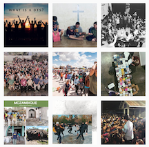

Research
Subtitle here.
Primary Client Research
Research from the YWAM Website
Youth with a Mission, better known as YWAM (“WHY-wham”), strives to know God and make Him known throughout the world. Through this goal, YWAM specifically focuses on getting youth involved with missions through evangelism, serving, and discipleship, and with over 1200 ministry centers and Discipleship Training Schools, they are able to make that possible.
 Home Page
Home Page
YWAM’s home page features various sections to learn more about their Discipleship Training Schools, ways to get involved, and a map to explore trips. The page also features a video that summarizes what YWAM is as well as a section highlighting the latest news updates.
DTS and Training
The Discipleship Training School (DTS) is highlighted throughout YWAM’s site and seems to be one of their greatest draws along with their outreach trips. It gives people the opportunity for intense discipleship accompanied by an opportunity for outreach.
They also have the University of the Nations which has locations across the world. In order to complete other classes at this university, students are required to go through DTS as a prerequisite. People can choose a variety of studies from the seven different colleges within the University.
Their mission of knowing God is seen through the training and schooling they offer in addition to the ministry centers across the world that display how YWAM makes God known.
Get Involved
YWAM’s core mission of making God known and knowing Him is clearly displayed through the variety of opportunities offered. One of the ways that people can get involved is through the option of outreach trips. Through the site, I was able to search different outreach trips based on interests or by location. The outreach trips range in length, location, and task. People are also able to volunteer if they are by a local ministry center or they can join staff and serve alongside other YWAMers. If people do not want to be involved with these opportunities directly, they can find resources on how to pray and donate to YWAM.
Through this section of the site, I was able to look through the variety of outreach trips offered. This led me to pages on the site that showed more information about the specific ministry center and details of the trip. It also showed information on how to connect with staff and to see if the trip would be a good fit based on the different ministry and service opportunities.
About Us
Under this section, there are ten tabs to choose from. Both About YWAM and YWAM Purpose, Beliefs, Values gives better insight to their core mission and beliefs that the organization stands by. Through this, I learned that YWAM invites all Chrisitans from every denomination around the globe to be a part of their organization. Additonally, I learned that almost half of their staff comes from Non-Western countries.
I also found a variety of opportunities for groups, parents, churches, children and teens, and alumni to explore. The trip opportunities showed me that even though their mission is targeted at younger adults, YWAM has expanded to reach a broader audience.
Then, I came across the contact page that leads users to a FAQ and a search bar to look up specific YWAM ministry centers’ contact information. While there are still ways to contact the main office, the main purpose of the contact page seems to direct users to their desired ministry centers for more information.
Research from YWAM's Social Media
Because of the variety of ministry centers, there are a lot of social media accounts connected to the YWAM’s main account. Across social media platforms and the variety of accounts connected to YWAM, the majority of pictures show young adults on trips serving or in small groups. This can especially be seen on their Instagram and Twitter. Their Facebook also shares a lot of informative videos that feature different ministry centers and their stories.
Research from YWAM's News Stories
The most recent news story was for their Global Prayer Initiative that YWAM started promoting in September of 2020. Podcasts, videos, and reading all accompanied this initiative. A news story like this gave me insight to see if YWAM has a consistent and strong content strategy for promoting stories and events.
Secondary Client Research
After looking at YWAM’s website intensively, I knew I needed to do outside research to specifically gain better knowledge about designing for different cultures and to find inspiration.
Culturally Inclusive Design
 Because of YWAM’s audience coming from different cultures and backgrounds, I knew I needed to learn how to design a website that is culturally inclusive. From my Primary Client Research, I learned that roughly half of YWAM’s staff is from Non-Western countries, and because of this, I know it will be important to make sure the design is able to communicate effectively to all cultures.
Because of YWAM’s audience coming from different cultures and backgrounds, I knew I needed to learn how to design a website that is culturally inclusive. From my Primary Client Research, I learned that roughly half of YWAM’s staff is from Non-Western countries, and because of this, I know it will be important to make sure the design is able to communicate effectively to all cultures.
One of the articles I found on the website Go-Gulf gave me more insight to how designers can include a variety of cultural preferences to reach a broader audience. Additionally, the website explained that when websites change to different languages, certain languages will take up more or less space than the English language does. I thought this was important to note so I can intentionally create my design and copywriting to be more compatible across different languages.
Toptal, the next website I found, gave seven dimensions of cross-cultural design that highlight differences between countries and how to relate better to their cultures in regards to design. The article also mentioned the importance of picking a typeface that can support multiple languages through its design. If I choose a typeface like this, I will be able to have the option of at least being able to add in different words and phrases from other languages.
Other Websites
International Mission Board
I looked at the International Mission Board’s website because overall it has a very effective design and their mission is also very similar to YWAM’s. One aspect in particular that stood out to me from the IMB’s website was their search option for their trips. In contrast, YWAM’s search layout is harder to follow and the information given is not in a user friendly layout.
Dreams Have No Boundaries
Dreams Have No Boundaries is a non-profit seeking to provide children in Bangladesh the resources and skills to flourish in school. This non-profit website clearly uses colors and illustration elements to successfully enhance the design of the website. Even though the colors are unexpected and bold, they go together to make a cohesive site. Colors and illustration elements could really help make the YWAM site more youthful while still reaching all target audiences.
Traffick Watch
Traffick Watch is a non-stop visual experience that still provides all of the information needed. The site is very interactive yet still user friendly. From this particular viewpoint, this website design shows me that I do not have to compromise one aspect for another in order to create an effective website design. While I might not need the site to be as interactive as Traffick Watch, their website will serve as an inspiration throughout my process of designing YWAM’s site.
Facts and Figures
The Traveling Team provides statistics for missions in relation to religions, languages, people groups, and more. These statistics affirm that in order for YWAM to send people, there has to be a need, and there clearly is one when looking at the statistics from The Traveling Team.